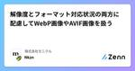

株式会社モニクルのフィード
https://zenn.dev/p/monicle
モニクルは、金融サービステック企業です。 金融の専門知識がなくても、正しい意思決定ができる社会へ。 そのために必要なのは、人によるサービスとテクノロジーの掛け合わせ。 既存のフィンテックとは異なる挑戦に取り組みます。
フィード

mise + RubyMine 設定メモ（2024年7月時点）
株式会社モニクルのフィード
nodenv, rbenv から mise に移行しました。https://mise.jdx.dev/TypeScript は VSCode で書くのですが特に問題はなし。一方で Ruby/Rails は RubyMine で書くのですが mise に移行してちょっと設定が必要だったのでメモを残しておきます。RubyMine 2024.1 から mise が公式にサポートされています。https://blog.jetbrains.com/ruby/2024/04/rubymine-2024-1-is-out/#support-for-the-mise-version-manage...
1日前

解像度とフォーマット対応状況の両方に配慮してWebP画像やAVIF画像を扱う 6
6
株式会社モニクルのフィード
こんにちは、Webサイト作ってますか？ Webサイトを作っていると、Lighthouseスコアを上げるために画像のサイズやフォーマットにも気を配りたくなりますよね。筆者は画像のフォーマットにはあまり頓着してこなかったので、「フラットな画像ならPNG」「込み入ったイラストはJPEG」「なんかWebPとかいうのもあるらしいけどよくわからん」くらいの解像度で適当に使っていました。しかし、最近の開発でLighthouseスコアのチューニングをしてみたところ、色々新しい知見が溜まったので、自分用の備忘録として残しておこうと思います。 3行まとめちゃんと複数の解像度の画像を用意しようねW...
8日前

Remix on Cloudflare Pagesで、@vercel/ogを使ってOGP画像を生成する
株式会社モニクルのフィード
こんにちは、Webサイト作ってますか？ Webサイトを作ってると、SNSやSlackにURLが貼られた時の見栄えを良くするために、OGP画像（og:image）を設定したくなりますよね。筆者はCloudflare PagesとRemixでサイトを作ることが多くなってきたのですが、OGP画像を動的に生成する上手い方法を調べていたら一定の成果が出たので、共有しておこうと思います。要点としては次のとおりです。Cloudflare Pages向けの @vercel/og ラッパーを使うできたらURLの末尾を .png にする（Cloudflareのキャッシュを効かせるため） Ve...
19日前
Node.jsのモジュールタイプごとの読み込み方法
株式会社モニクルのフィード
はじめにCJSやESMといったモジュールタイプ、先人たちの記事を読み理解したつもりになるが、時間が経つと完全に忘れるということを繰り返している。package.jsonの最低限の設定と、その読み込み方法を簡易的に記載する。これは検証で書いたサンプルコードhttps://github.com/kkznch/sample-dual-package CJSからCJS, ESMを読み込むパッケージ中の .js は、パッケージのpackage.jsonに記載されている type フィールドが commonjs の場合はCJSとして扱われ、 type フィールドが module の場...
1ヶ月前
TSは型推論が楽しい
株式会社モニクルのフィード
今までTSをたくさん書く機会がなかったのですが，最近はTSをたくさん書く機会に恵まれたおかげでTSの型推論に面白さを感じています． TSの型今まではGoを書く機会が多く，たまにTSを書くと型の弱さが気になっていました．例えば，Goで次のようなコードはコンパイルエラーとなります．package maintype A inttype B intfunc foo(a A, b B) {}func main() { var a A = 1 var b B = 2 foo(b, a) // ./prog.go:12:6: cannot use b ...
3ヶ月前
モニクルのSREチーム形成期を振り返って
株式会社モニクルのフィード
はじめにモニクルでSREをしているbeaverjrです。この記事では、私が2023年7月に弊社初の専任SREとして入社してからの経験を振り返り、行ってきたこと、実際に直面した挑戦やそこから得られた学びを共有します。今回は技術的な面ではなく、SREチーム・個人としてどのように成長してきたか、その過程でどのようにSREのイネーブリングの取り組みを進めてきたかに焦点を当てて紹介したいと思います。※イネーブリング：この文章では組織にSREの原則と実践を広め、根付かせることを目指す活動を意味します。 SREチーム立ち上げの背景弊社はエンジニア全員がフルサイクルエンジニアとして活躍...
3ヶ月前
GraphQL のデータソースに microCMS を 使う
株式会社モニクルのフィード
はじめにこの記事では、GraphQL のデータソースに microCMS を利用する方法を書いてみます。GraphQL は BFF として利用するケースも多いですが、GraphQL としては、データがどこから来たのかは重要ではありません。データベースや RESTful API、マイクロサービスから取得するといった選択肢があります。今回は microCMS をデータ取得元にすることを想定し、その構成や構築手順を書いていきます。（以下の図の REST API の部分が mciroCMS になるイメージです。）GraphQL is data source agnostic出典: h...
4ヶ月前
BigQueryのクエリ利用量に上限を設定しよう！TerraformによるGoogle Cloudクォータ管理
株式会社モニクルのフィード
はじめにAWSやGoogle Cloudなどのクラウドサービス上でリソースとコストを効率的に管理するためには、適切なクォータ設定がマストです。例えば、やばい!!!!! 間違ってBigQueryで大量のデータにクエリを実行してしまった!!!!!!!という場合などでも、クォータを適切に設定しておけば、予期しない高額な請求を防ぐことができ、一安心です。この記事では、Terraformを用いてGoogle Cloudのクォータ管理をする方法を、BigQueryの事例を通して説明します。 Google CloudのクォータについてGoogle Cloud コンソールでは、クォー...
5ヶ月前
Next.js(AppRouter)でDynamicFunctionを使ってもCacheHitさせる
株式会社モニクルのフィード
はじめにNext.js(AppRouter)をみなさん上手く扱えていますでしょうか？弊社では現在新規プロダクトで使っているのですが、パフォーマンスが良くないという問題にぶちあたっていました。今回はその解決方法を一部共有したいと思います。前提条件として弊社は以下の環境となっています。next : 14.1.0react : 18.2.0react-dom : 18.2.0typescript : 5.3.3Node.js : 18.17.1デプロイ環境 : Vercel!「一部」という表現は、問題の要因としてsearchParamsもあるのですが、今回はD...
5ヶ月前
Denoの静的サイトジェネレータ`Lume`の紹介
株式会社モニクルのフィード
2023年12月に静的サイトジェネレータであるLumeのバージョン2がリリースされました．私は個人ブログを書くのに GitHub Pages + Lume を利用しているので，年末はLumeのバージョンアップなどの作業をしていたのですが，改めて体験が良いなと思ったのでLumeの紹介をしたいと思います． 前提知識 GitHub PagesGitHub PagesはGitHub社がプロジェクトのプロジェクトのウェブサイトを提供することを目的に，リポジトリに配置してある静的ファイル(HTMLやJSなど)をホスティングしてウェブサイトを公開してくれるサービスです．@a-skuaという...
5ヶ月前
Amazon Connectの電話番号移行：アカウント間でスムーズに進めるためのポイント
株式会社モニクルのフィード
組織再編などで企業やプロジェクトの構造が変化すると、異なるAWSアカウントでサービスを管理する必要が生じることがあり、Amazon Connectの電話番号に関してもアカウント間で移行するシーンがあるかと思います。実際にAmazon Connectの電話番号をアカウント間で移行した際、注意しなければならないと思った点を紹介します。 アカウント間での電話番号移行下記の公式ドキュメントのAmazon Connectインスタンスが異なるリージョンまたは異なるAWSアカウントにある のセクションにも記載がある通り、アカウント間での移行には移行元と移行先の各アカウントから1つずつ、2つのA...
5ヶ月前
MDNでHTMLを体系的に学んでみた備忘録
株式会社モニクルのフィード
はじめにみなさんはHTMLをどんなサイト・書籍で学んできましたか?私はというと、10年前に当初全て無料で閲覧できていたドットインストールで少しかじり、7年前にWebアプリケーションの開発をする中でプロダクトコードから学んだという具合でした。現在の会社に転職してきて再度フロントエンドの開発もすることになり、思い返してみるとHTMLを体系的に学んでこなかったと思ったので、MDNが公開している「ウェブ開発を学ぶ」をやってみました。この記事ではなるほどなと思った部分を抜粋して紹介したいと思います。 前提知識基本的なことから理解を進めようと思っていたので、まずは「ウェブ入門」から...
6ヶ月前
そのままでは動かない Vercel 公式サンプル Node.js Serverless Functions を動かす
株式会社モニクルのフィード
フロントエンドはいらなくてシンプルな Node.js だけを動かしたい。であれば、Vercel の Serverless Functions だけ使うのも良いかもな〜と思い、Vercel 公式サンプルhttps://vercel.com/templates/other/nodejs-serverless-function-expressを動かしたかったんですが、2024-01-12 時点でそのままでは動かなかったので備忘録です。$ ghq get https://github.com/vercel/examples$ cd $HOME/dev/src/github.com/ver...
6ヶ月前
Cloudflare Workers プロジェクト作成から GitHub Actions 自動デプロイまで最速でやる
株式会社モニクルのフィード
Cloudflare の公式ドキュメントはこちら。https://developers.cloudflare.com/workers/wrangler/ci-cd/公式ドキュメントのとおりにやれば良いだけの話ではあるのですが、「よーし、なんか作るぞー」と思ってから、表題のとおりプロジェクト作成から main ブランチにプッシュされたら（実際のお仕事では main ブランチに直接プッシュはしないので PR が main ブランチにマージされたら）GitHub Actions で自動デプロイされるまでの環境構築を、あまり頭を使わずにシュッとやりたいのでまとめました。Cloudflar...
6ヶ月前
2024年こそ corepack を使おう
株式会社モニクルのフィード
普段の開発では nodenv を使って各プロジェクトのバージョンに合わせた Node.js をインストールしています。その後、各プロジェクトの README や package.json を頼りに npm install -g yarn や npm install -g pnpm することが多いです。先日、同僚から「最近は corepack 使ってますよ」と教えてもらったので、「おーもう実務で使えるのかー」と一気にモチベーションが上がったので corepack 使っていきたいと思います。まずはこちらの鉄板記事でおさらい。https://zenn.dev/teppeis/articl...
6ヶ月前
Web+DB な業務システムも Cloudflare Workers で動かしたい！Connection pooler 比較
株式会社モニクルのフィード
この記事は、モニクル Advent Calendar 2023 の10日目の記事です。 はじめにCloudflare Workers から DB は普通に使えます。https://developers.cloudflare.com/workers/tutorials/postgres/しかしながら、Cloudflare Workers に限らず Edge な環境における DB のコネクションまわりについて、以下のことが気になります。処理の度に接続が切れるのでコネクションプールが使えない（プールしても使い回せない）つまり毎回新しい接続確立のコスト（時間）が発生する新しい...
6ヶ月前
【試練】RailsアプリをReact+GraphQLに置き換える！
株式会社モニクルのフィード
この記事はモニクルAdventCalendar2023の21日目の記事です。 ご挨拶 + 概要どうもこんにちは！モニクルのエンジニアの久慈です。そろそろクリスマスも近くなってきましたね🎅最近は朝がとっても寒く感じ、ベットからやっとの思いで飛び起きています。毎朝の起床も試錬に感じますが、今回は業務で試錬に感じていることについてまとめていこうと思います。↓「試練」とはこの記事では、モニクルに入社してから自分が携わっている業務の一つである、Railsで作られている社内向けプロダクトをReact+GraphQLに置き換えていく業務についてまとめていこうと思います！ 開発して...
6ヶ月前
VercelのログをCloud Loggingに送りたい!! with Cloudflare Workers
株式会社モニクルのフィード
この記事は モニクル Advent Calendar 2023 の 8 日目の記事です。@beaverjrです。モニクルでSREをしています。 はじめにVercelでは、出力したログを各プロジェクトのFunctions画面でリアルタイム表示させることができますが、保存はされません。https://vercel.com/guides/how-do-i-store-logs-on-vercelログを永続的に保持しておくためにはVercelが連携している外部loggerサービスhttps://vercel.com/integrations#loggingまたはLogDra...
7ヶ月前
Cloud Runの不要なリビジョンを削除するGitHub Actions
株式会社モニクルのフィード
!この記事は モニクル Advent Calendar 2023 7 日目の記事です。@Colt45s です。弊社のとあるプロダクトでは、 アプリケーションのデプロイ先に Cloud Run を選択しています。大雑把な構成図はこちらの記事を参照してください。https://zenn.dev/monicle/articles/81065e5f015bb4GitHub で PR を作成した時に、Cloud Run にpr-PRの番号でタグ付けしてデプロイしています。URL マスクを <tag>-<service>.ドメイン のように設定して NEG ...
7ヶ月前
立ち上げ初期のチームとモブプログラミング
株式会社モニクルのフィード
はじめにこの記事は モニクル Advent Calendar 2023 の 6 日目の記事です。この記事では、立ち上げ初期のチームにモブプログラミングを取り入れてみたら、チームビルディングが促進されたり、チームの課題と感じていた属人化が防げるようになった話を紹介したいと思います。 対象読者立ち上げ初期のチーム[1]で、これからチームをよくしていきたいと考えてる人個人分担で開発が進み担当者の属人化が課題と感じてる人 モブプロとはモブプログラミングとは、複数人で一つのコンピューターの前に集まって、みんなで協力しながら問題を解決していくことです。タイピスト(ドライバー)...
7ヶ月前